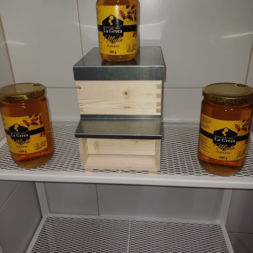
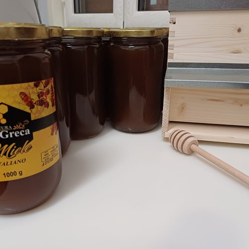
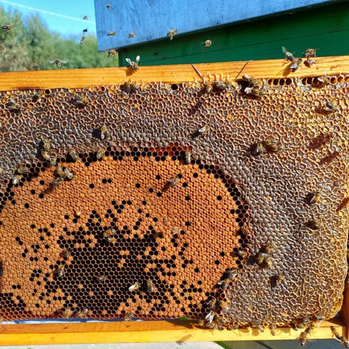
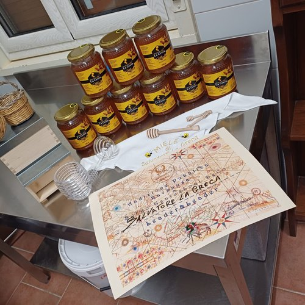
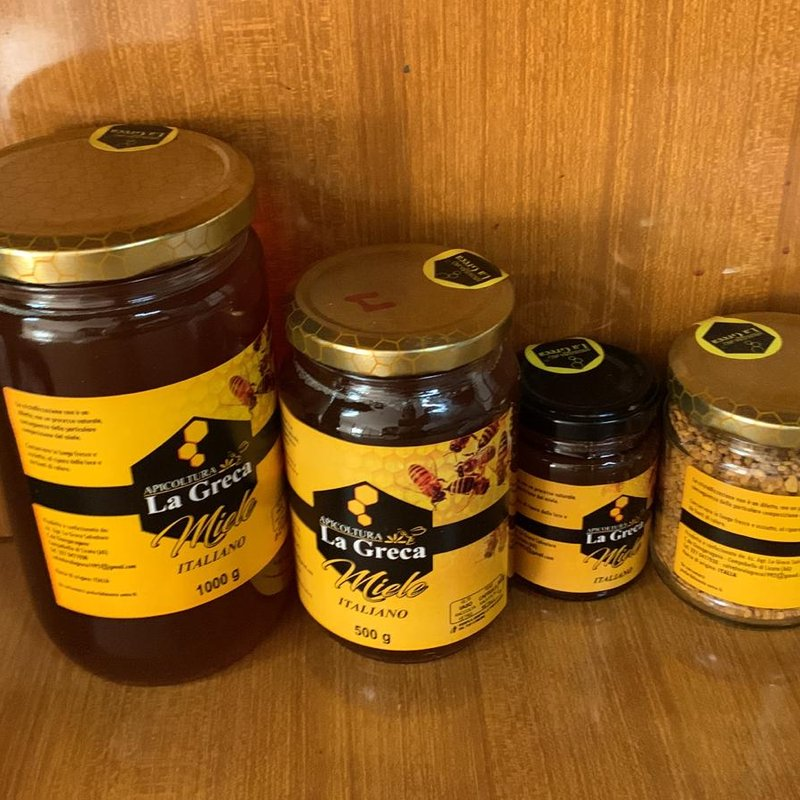
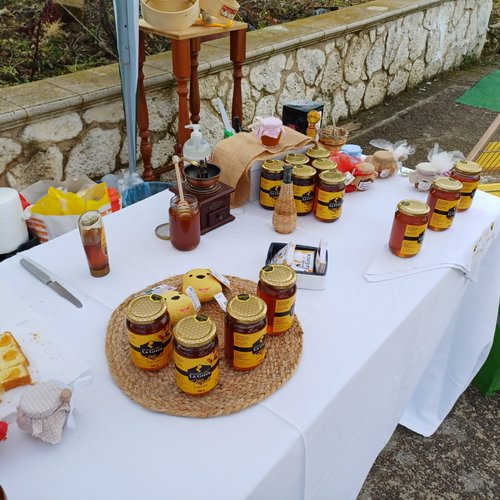
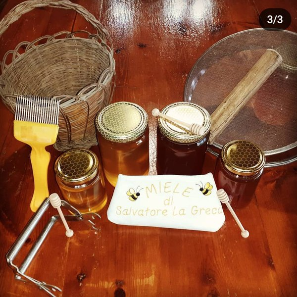
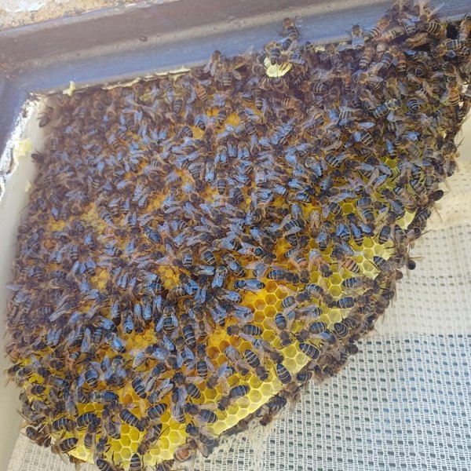
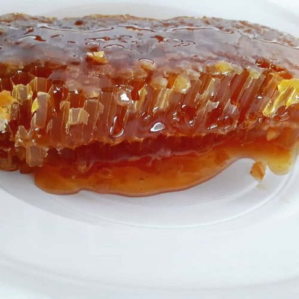

Miele Siciliano Artigianale · 100% Sicilia
— Dalle nostre arnie alla vostra tavola —
Una collezione di mieli artigianali e specialità apistiche, prodotti tra gli eucalipti, la sulla e i fiori della terra siciliana da Salvatore La Greca a Campobello di Licata.
CAMPOBELLO DI LICATA · AGRIGENTO · SICILIA

Il miele che racconta una stagione intera: ogni vasetto è una fotografia del territorio, una sintesi viva delle fioriture siciliane che le nostre api visitano da aprile a luglio.
Nettare da più fioriture spontanee: agrumi, sulla, trifoglio, fiori di campo. Composizione che varia con la stagione.
Colore da ambrato chiaro a dorato in base alla raccolta. Cristallizzazione naturale media-fine, dal beige al miele tenue.
Bouquet floreale ricco ed equilibrato. Dolce e armonico, con note di fiori freschi, frutta matura e un finale lievemente erbaceo.
Il miele più versatile: colazione, pane casereccio, ricotta fresca, frutta, tisane, dolci, gelato. Piace a tutti.

Il miele dei nostri apiari tra gli eucalipti siciliani: balsamico, intenso, dal carattere fresco e aromatico. Il rimedio naturale che le nonne mettevano nel tè quando arrivava l'inverno.
Nettare raccolto sui fiori di eucalipto nelle zone costiere e nelle pinete della Sicilia centro-meridionale. Fioritura tra maggio e giugno.
Colore ambrato chiaro allo stato liquido, tende a una cristallizzazione fine e compatta di tonalità beige-dorata nel tempo.
Profumo intenso e mentolato. Gusto deciso con sentori di malto, liquirizia e foglie di eucalipto; finale leggermente balsamico.
Tisane calde, latte, yogurt, formaggi piccanti, marinature di carne bianca. Cucchiaino al giorno per le vie respiratorie.

Per chi ama i sapori decisi: il miele scuro e nobile della montagna siciliana. Un miele che non si dimentica, ricco di sali minerali e di personalità.
Nettare dei fiori di castagno raccolto nelle aree boschive interne dell'isola. Fioritura tra fine giugno e luglio.
Colore ambrato scuro, quasi mogano. Resta liquido a lungo, cristallizza tardi e a granuli grossi.
Aroma intenso e penetrante, sentori di legno e tannino. Gusto pieno con caratteristica nota amarognola di fondo.
Re dei formaggi: pecorino stagionato, ricotta salata, gorgonzola. Salumi, frutta secca, dessert al cucchiaio, vini rossi strutturati.
Il miele simbolo della nostra terra: la sulla, pianta endemica siciliana, regala un miele chiaro, delicato, dolcissimo. Il preferito per la colazione, si sposa con tutto.
Nettare della sulla (Hedysarum coronarium), leguminosa endemica della Sicilia. Fioritura tra aprile e maggio.
Colore chiaro paglierino, talvolta quasi bianco. Cristallizza rapidamente in una massa fine e cremosa.
Sapore dolce e delicato, profumo fresco di campo fiorito; note vegetali tenui, nessuna acidità.
Pane appena tostato, ricotta e formaggi freschi, tè verde, frutta, yogurt. Perfetto per dolcificare senza alterare i sapori.

Una nostra creazione speciale: Salvatore parte dal Millefiori e lo arricchisce personalmente con un blend di olii essenziali naturali. Non un miele prodotto dalle api, ma una lavorazione artigianale dell'apicoltore pensata per esaltarne le proprietà balsamiche.
Base di Miele Millefiori arricchito da Salvatore con un blend di olii essenziali naturali: mentolo, eucalipto, propoli, rosmarino, lavanda e limone. Lavorazione manuale dell'apicoltore, non delle api.
Colore ambrato dorato che riflette la base Millefiori. Profumo intenso e mentolato, immediatamente riconoscibile.
Aroma fresco e balsamico dominato da mentolo ed eucalipto, con sentori erbacei di rosmarino e lavanda e un finale agrumato di limone. Sensazione lenitiva in gola.
Tisane, infusi caldi, latte. Un cucchiaino in acqua calda e limone per gola, tosse e raffreddore. Eccellente anche puro al cucchiaio.

Il miele come madre natura lo ha creato: estratto a freddo, filtrato solo grossolanamente, mai pastorizzato. Un alimento vivo che conserva tutti gli enzimi, i pollini e le proprietà del nettare originale.
Estratto direttamente dai favi opercolati tramite smielatura a freddo, filtrato attraverso rete a maglia larga per togliere solo la cera grossolana. Nessuna pastorizzazione, nessun trattamento termico.
Colore variabile in base alla fioritura. Cristallizza rapidamente proprio perché ricco di pollini e cere fini: è il segno che il miele è autentico e vivo.
Più ricco e complesso di un miele filtrato fine: gusto pieno, rotondo, con sfumature floreali più marcate e un finale lungo che racconta il territorio.
Conserva intatti enzimi naturali, pollini, propoli residua, antiossidanti e vitamine termolabili. Il modo più completo di consumare miele.
Prezzo su richiesta
Produzione stagionale limitata. Disponibile in barattoli da 500g e 1kg.
Contattateci per dettagli sulla raccolta in corso.

Energia pura dalla natura: granuli colorati che le nostre api raccolgono fiore dopo fiore. Una piccola rivoluzione di vitamine, proteine e antiossidanti in un cucchiaino.
Raccolto direttamente all'ingresso delle arnie con trappole dedicate, essiccato a bassa temperatura per preservarne le proprietà.
Granuli policromi: giallo, arancio, rosso, marrone, in base alla fioritura visitata. Profumo intenso, sapore floreale e leggermente amarognolo.
Ricco di proteine vegetali, vitamine del gruppo B, sali minerali e antiossidanti. Ricostituente naturale e immunostimolante.
1-2 cucchiaini al giorno, a stomaco vuoto o sciolto in yogurt, succo, smoothie, frutta. Cicli di 2-3 mesi nei cambi di stagione.
Prezzo su richiesta
Confezioni e disponibilità variano in base alla raccolta stagionale.
Contattateci per dettagli e ordini personalizzati.

Il super-alimento delle api: la sostanza che trasforma una larva qualsiasi in regina. Energia, vitalità e cura quotidiana in una piccola dose preziosa, raccolta fresca dalle cellette reali.
Prodotta dalle ghiandole faringee delle api operaie giovani per nutrire le larve di ape regina. Raccolta fresca dalle cellette reali e conservata a bassa temperatura.
Crema bianco-perla, consistenza gelatinosa, sapore acidulo intenso. Conservata refrigerata in piccoli vasetti ermetici.
Ricca di proteine, lipidi, vitamine del gruppo B (B5, B6), acetilcolina e minerali. Ricostituente, energizzante, rinforza il sistema immunitario e supporta nei periodi di stress.
1 grammo al mattino a digiuno, sotto la lingua per assorbimento sublinguale. Cicli di 1 mese nei cambi di stagione o nei periodi di affaticamento.
Prezzo su richiesta
Raccolta limitata, conservazione refrigerata obbligatoria.
Disponibile su prenotazione in vasetti da 10g, 20g e 50g.

Il sigillante naturale dell'arnia: una resina aromatica che le api raccolgono dalle gemme degli alberi e trasformano in un potente difensore antimicrobico. La "farmacia" delle api a vostra disposizione.
Resine raccolte dalle api da pioppo, betulla, conifere e altre piante, miscelate con cera e enzimi salivari. Estratta dalle arnie tramite griglia raccoglitrice o raschiatura manuale.
Grezza in panetti ambra-marrone, oppure trasformata in tintura idroalcolica e in caramelle al propoli per uso quotidiano.
Antibatterico, antimicotico, antivirale e antinfiammatorio. Ricca di flavonoidi e polifenoli, è un alleato naturale per le difese immunitarie.
Tintura madre: 20-30 gocce in acqua per tosse, mal di gola, primi sintomi influenzali. Caramelle al propoli per uso preventivo quotidiano in inverno.
Prezzo su richiesta
Disponibile come propoli grezza, tintura madre idroalcolica e caramelle.
Contattateci per dettagli e disponibilità.

Il miele nella sua forma più pura: ancora dentro il favo costruito dalle nostre api. Un'esperienza autentica, da assaporare lentamente, come si faceva una volta.
Favo integro e mai trattato, costruito dalle api con cera naturale durante le fioriture primaverili. Nessuna estrazione meccanica.
Cera dorata con celle esagonali ricolme di miele opercolato. Si presenta in porzioni rettangolari da gustare al cucchiaio o tagliate a quadretti.
Cera commestibile e profumata, si scioglie in bocca rilasciando miele non filtrato che conserva tutti gli enzimi naturali.
Su tagliere di formaggi erborinati e stagionati, con pane caldo e olio, su dessert al cucchiaio o crackers. Ideale per regali e ricorrenze.
Prezzo su richiesta
Produzione artigianale e limitata. Disponibile su prenotazione.
Perfetto per gift box, bomboniere ed eventi privati.